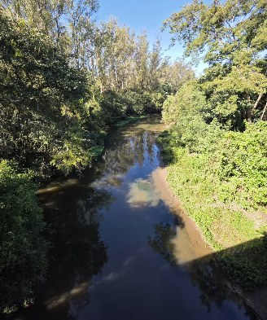
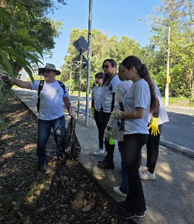
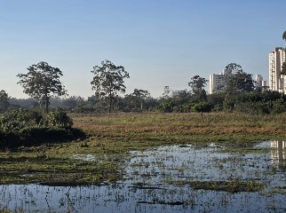
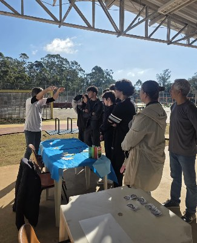
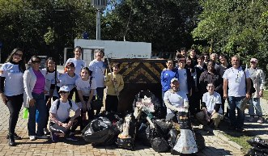
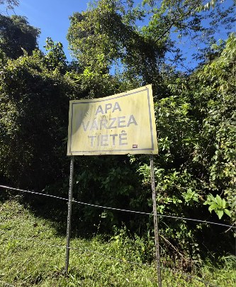
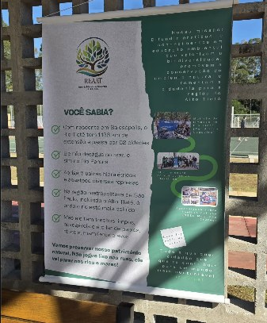

Quem conhece o rio cuida do rio. Vamos conhecer o Alto Tietê juntos.
A REAAT reúne educadores ambientais que levam ao território o que sabem sobre rios, fauna, enchentes e a vida de quem mora aqui. Venha participar das nossas ações.


Uma rede que leva a educação ambiental até quem vive aqui
A REAAT conecta educadores ambientais, compartilha práticas e fortalece ações no Alto Tietê. Cada integrante aproxima a rede de públicos e espaços diferentes, de escolas a fóruns locais.
Queremos mostrar como o Rio Tietê, a fauna e as enchentes afetam a vida da região, e dar visibilidade ao trabalho de quem ensina sobre isso.
Educação ambiental
Conhecimento técnico explicado em linguagem simples, dentro do território.
Parcerias e projetos
Escolas, organizações locais, editais e projetos já ativos na região.
Mobilização comunitária
Espaço para moradores enviarem fotos, dúvidas e relatos sobre o Alto Tietê.
As pessoas que fazem a rede
Educadores e especialistas que explicam o território com conhecimento e experiência de campo.
Ações para participar
Vivências, oficinas e encontros no território. Qualquer pessoa pode se envolver.

Meio AmbienteComunidade
Vivência na nascente do Tietê
Visita guiada para entender de onde vem o rio e como ele muda ao atravessar as cidades.

Educação
Oficinas em escolas
Atividades com estudantes e professores sobre água, fauna e o lugar onde vivem.

ComunidadeEducação
Rodas de conversa e fóruns locais
Moradores e educadores trocam dúvidas sobre rios e enchentes, e a REAAT participa de espaços já ativos na região.
Notícias e artigos
Histórias da rede e do território. Em breve, no blog da REAAT.

Por que o Tietê muda de cor ao atravessar o Alto Tietê?
Um educador explica o que acontece com a água do rio no caminho.
Ler artigo completoCinco aves que você pode ver sem sair de casa
Curiosidades sobre espécies comuns da região e como observá-las.
Ler artigo completo
Como se preparar para as chuvas: orientações para moradores
Dicas práticas dos educadores da REAAT sobre enchentes.
Ler artigo completo